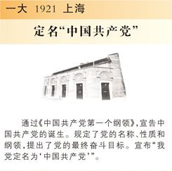

党章是党的总章程和根本大法。中国共产党第一部党章是1922年中国共产党二大制定的，除去五大外，此后历次代表大会均对党章作出不同程度的修改。
-
一大 1921 上海
定名“中国共产党” 
显示更多 -
二大 1922 上海
通过第一部党章
显示更多 -
三大 1923 广州
首次规定党员候补期
显示更多 -
四大 1925 上海
最高领导首称总书记
显示更多 -
五大 1927 武汉
首次设立中央政治局
显示更多 -
六大 1928 莫斯科
首次明确民主集中制原则
显示更多 -
七大 1945 延安
确立毛泽东思想指导地位
显示更多 -
八大 1956 北京
首次确立党代会实行常任制
显示更多 -
九大 1969 北京
错误肯定了根据“无产阶级专政下的继续革命”的理论发动的“文化大革命”
显示更多 -
十大 1973 北京
继续了九大的“左”的错误，肯定了“文化大革命”
显示更多 -
十一大 1977 北京
县团以上党委设纪委
显示更多 -
十二大 1982 北京
首次载入入党誓词
-
十三大 1987 北京
首次规定差额选举
显示更多 -
十五大 1997 北京
确立邓小平理论指导地位
显示更多 -
十六大 2002 北京
“三个代表”确立为指导思想
显示更多 -
十七大 2007 北京
科学发展观写入党章
显示更多 -
三大 1923 广州
首次规定党员候补期
显示更多 -
十八大 2012 北京
确立“五位一体”总体布局
显示更多 -
十九大 2017 北京
将“习近平新时代中国特色社会主义思想”确立为党的行动指南
显示更多